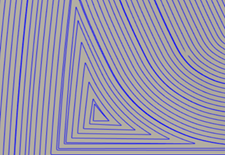

Désactivé
Activé
Crée une passe de trait d'axe sur les angles vifs dans la trajectoire d'outil afin de retirer l'excédent de matière.
En fonction de la géométrie du profil externe du modèle, les angles vifs peuvent être générés en tant que décalages vers l'intérieur de la trajectoire d'outil en crête constante. L'excédent de matière peut être laissé entre les sommets des angles vifs, où la distance entre les sommets est supérieure à la valeur de recouvrement programmée.
 |
|
Désactivé |
Activé |